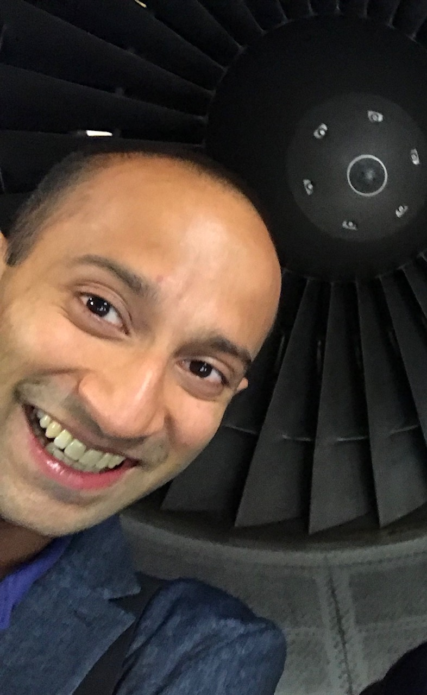

Pranay Seshadri

About me.
I live in London and work at the University of Cambridge and The Alan Turing Institute. I studied computational engineering at Cambridge and aerospace engineering previously at Maryland. During my doctorate I worked at Rolls-Royce plc in Derby and spent time at Stanford.
My research focuses on uncertainty quantification, optimisation
and machine learning applied to address challenges in aeroengines.
I am the founder of
Effective Quadratures.
My current research projects are:
- Bayesian models for improved aerothermal flow-physics in engines
- Subspace-based dimension reduction: algorithms and 3D blade design
- Machine learning with polynomials: from quadratures to neural networks
For all my publications, please check out
Google Scholar and
Researchgate.
For open-source codes, visit my
Github profile. If you are really interested in my research, check out
this high-level research talk.
Current PhD students.
Nicholas Wong: Embedded ridge approximations for improved computational aerodynamic inference.
James Gross: Techniques in polynomial subspace projections for design optimisation.
Contact.
IN2-17 Inglis Building,
Department of Engineering,
University of Cambridge.
p.seshadri @ eng.cam.ac.uk